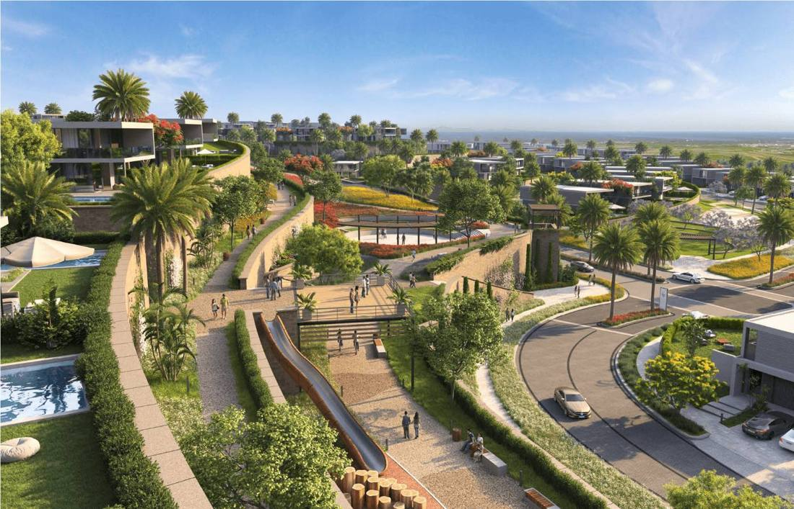
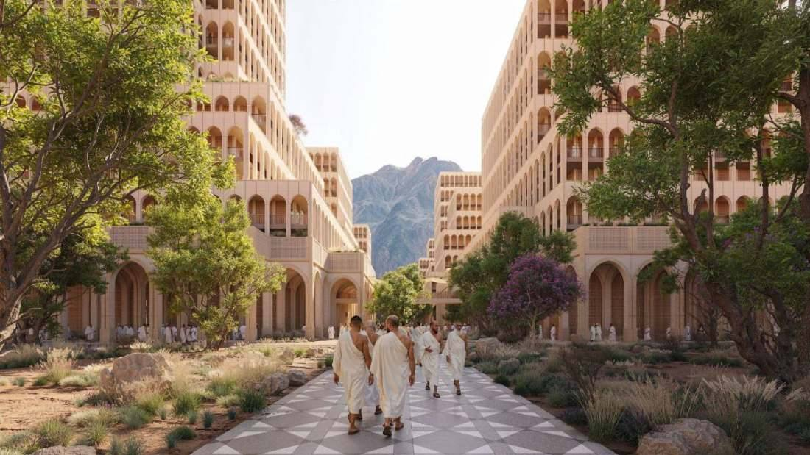
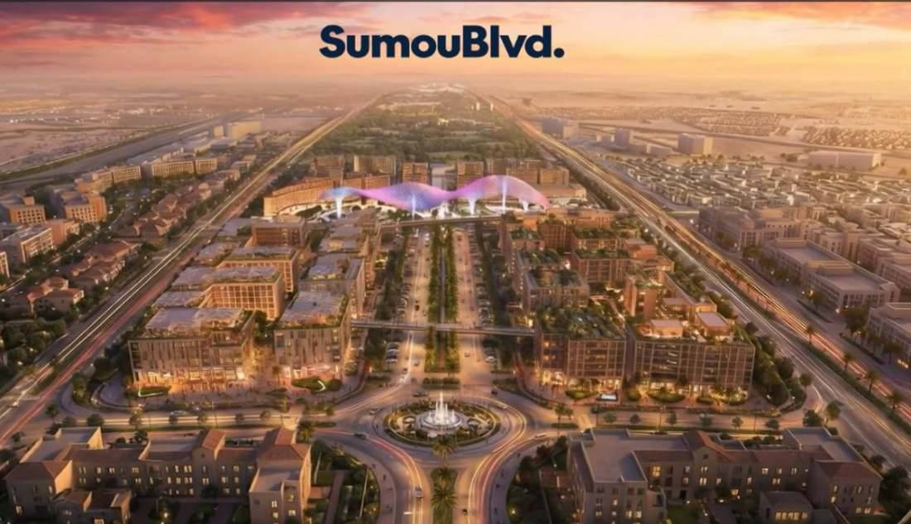
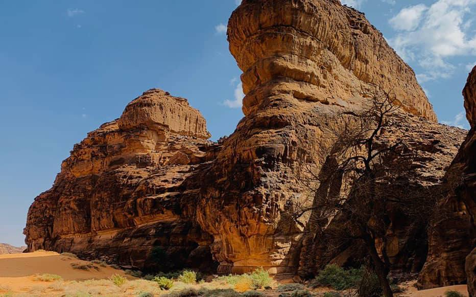
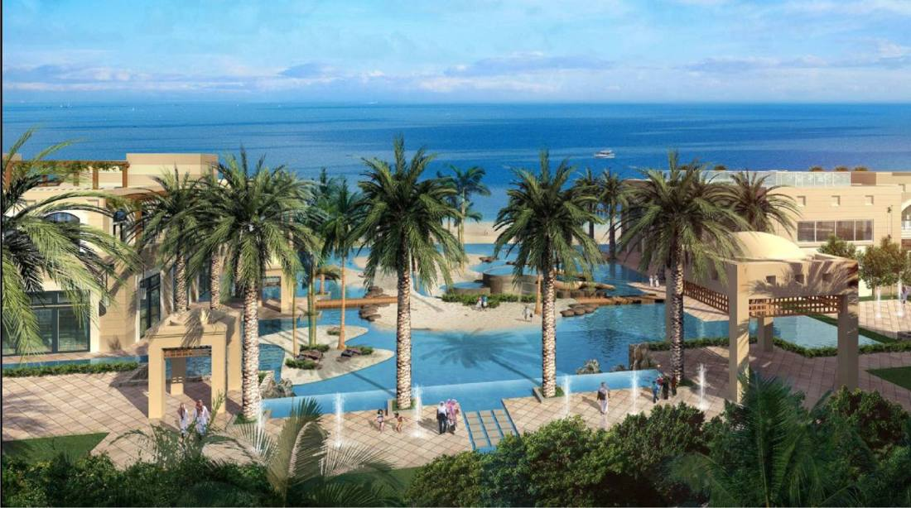

Sustainable commitments for a vibrant urban future.
Our responsibilities and actions across the whole ecosystem — people, society, culture, the environment and the planet — measured by performance, to build a better future for our planet.

Sustainability is at the core of everything we do.
We envision urban environments that are not only dynamic and livable, but deeply respectful of their environmental, social and cultural contexts.
Our goal is simple: to leave a positive legacy. Through every project, we aim to contribute to a more sustainable, equitable and meaningful urban future.
Environmental responsibility
Minimising our ecological impact through responsible land use, energy-efficient design and environmentally sound planning strategies.
Social inclusion
Creating accessible, inclusive spaces that serve diverse communities and foster a sense of belonging for all.
Cultural heritage preservation
Honouring the historical and cultural identity of each place in every project, ensuring continuity and authenticity.
Green building standards
International best practice and sustainable construction methods that enhance performance, reduce emissions and support long-term resilience.

Kidana Al Khaif · Mina, Makkah
Sumou Boulevard · New Cairo Khaybar Heritage Area · AlUla
Khaybar Heritage Area · AlUla
Sharaan Nature Reserve · AlUla
North-West Coast Regional Vision · EgyptPlaces designed around people.
Every plan starts with the people who will live, work, pray and visit there — human-scale streets, shade, walkability and public spaces where communities can gather.
Inclusive, affordable, connected.
We plan for social inclusion: affordable housing, access to services and mixed-use neighbourhoods that give every generation a place to belong — and a stake in the city’s future.
Heritage as a living foundation.
We read each place’s history before we draw a line, protecting cultural landscapes and carrying local identity forward, so that new development deepens a place’s character rather than erasing it.
Working with nature, not against it.
Responsible land use, protected ecosystems, water-wise landscapes and green building standards — from nature reserves in AlUla to green communities in New Cairo.
Resilient regions for a changing climate.
At regional scale we plan for resilience: compact growth, low-carbon mobility and coastlines and deserts managed for the long term, so that our work leaves the planet better prepared.

Where sustainability shapes place, purpose and people.
Alamein Riviera · North Coast, Egypt →Not just a guideline — a lens of transformation.
From mega cities to sacred landscapes, we weave resilience into every layer of planning.
Every decision we make is designed to serve the future. That’s how we build legacy, rooted in sustainability.
Leave no place behind.
Our work is aligned with the UN Sustainable Development Goals, contributing most directly to seven of the seventeen.
Affordable and clean energy
Ensure access to affordable, reliable, sustainable and modern energy for all.
PUD Energy-efficient master plans and renewable-ready districts.
Decent work and economic growth
Promote sustained, inclusive and sustainable economic growth, full and productive employment and decent work for all.
PUD Destinations and economic cities that create jobs and local value.
Industry, innovation and infrastructure
Build resilient infrastructure, promote inclusive and sustainable industrialization and foster innovation.
PUD Resilient infrastructure plans, from AlUla to the Saudi railway network.
Sustainable cities and communities
Make cities and human settlements inclusive, safe, resilient and sustainable.
PUD Our core purpose for sixty years.
Responsible consumption and production
Ensure sustainable consumption and production patterns.
PUD Land, water and materials planned for efficiency over the life of a place.
Climate action
Take urgent action to combat climate change and its impacts.
PUD Climate-resilient regional plans and low-carbon frameworks.
Partnerships for the goals
Strengthen the means of implementation and revitalize the Global Partnership for Sustainable Development.
PUD A curated network of global partners and local experts.